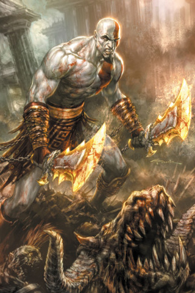
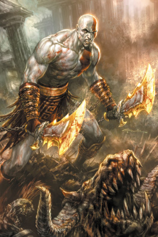

GOD OF WAR
The story and gameplay were amazing. Deserved GOTY.
Image: "God of War iPhone wallpaper" by xploitme at https://www.flickr.com/photos/45928872@N08/4213762186, CC BY-SA 2.0.
GOD OF WAR
The story and gameplay were amazing. Deserved GOTY.
Image: "God of War iPhone wallpaper" by xploitme at https://www.flickr.com/photos/45928872@N08/4213762186, CC BY-SA 2.0.
ELDEN RING
Haven't played it yet. But I have seen gameplay and I can't wait to play it as soon as I am home.
RDR2
Loved the story and character progression. Gameplay was phenomenal.

Image: "RDR2" by FotoScreenshot at https://www.flickr.com/photos/96397461@N08/49160454608, CC BY-NC 2.0.